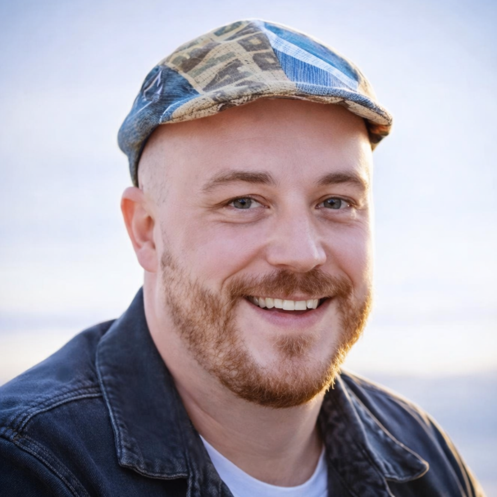

Rich Bartlett
Learning Designer
My time on the project
For three years, I had the privilege of designing learning across a diverse portfolio of OUA courses alongside an extraordinary team known as the Orca Pod, part of the Learning Enhancement Innovation division at the University of Adelaide. The name fit us perfectly. Orcas move with precision, communicate constantly, and rely on collective intelligence to navigate vast and unpredictable waters. That was how we worked. No one operated alone. Ideas surfaced, circled, and strengthened through shared effort.
The pod changed over time. People moved on, new directions called, but the group’s rhythm never broke. We held onto our Salmon Hats, stayed tightly coordinated, and when challenges appeared immovable, we did what orcas do best, worked together beneath the surface until something shifted. Quiet persistence, shared momentum, and absolute trust in one another.
What made it meaningful was seeing the impact. Meeting students who graduated from programs we helped shape made the work tangible. Presenting our collective process at ASCILITE 2025 gave us a moment to surface and look back at what we had built together.
A special acknowledgement goes to Tim Klapdor, my line manager across the entire UoA project and throughout the four and a half years I worked under the University of Adelaide banner before the launch of the new Adelaide University. His work in creating this portfolio site reflects not only deep technical expertise, but genuine care for the team and the project we built together. Like any strong pod, leadership mattered, and Tim helped ensure we always had direction, cohesion, and somewhere solid to surface.
More than anything, it was the experience of moving as a pod, learning, adapting, and creating alongside deeply talented people, that made the journey unforgettable.